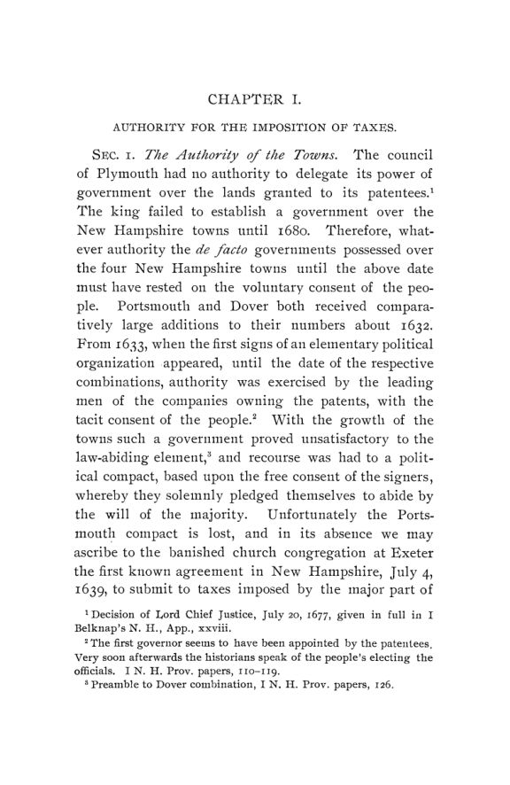

Robinson, 1902: dois séculos de impostos em New Hampshire
Leitura: 10 min
Do imposto por cabeça de 1680 à tributação de ferrovias, bancos e seguradoras, Maurice H. Robinson reconstituiu a história fiscal de New Hampshire. Um caso precoce de base tributária que foge.


New Hampshire, 1º de janeiro de 1886. Entra em vigor a chamada “valued policy law”, pela qual, em caso de perda total, a indenização do seguro contra incêndio seria o valor escrito na apólice, sem outra prova. As 58 seguradoras de outros estados que operavam ali saíram em massa. A arrecadação do imposto sobre seguros, que fora de US$ 10.081,59 em 1884-1885, caiu no ano do “êxodo” para US$ 4.831,56. Em 1º de dezembro de 1890, segundo mensagem do governador, 37 das 58 já tinham voltado e se ajustado à lei.
O episódio está em A History of Taxation in New Hampshire, de Maurice H. Robinson, publicado como volume 3, nº 3, da terceira série das Publications of the American Economic Association, com data de agosto de 1902 na capa e 226 páginas de texto. O prefácio, porém, é assinado em Urbana, Illinois, em janeiro de 1903. Robinson credita a ideia do estudo a James Fairbanks Colby, professor do Dartmouth College, avisa que deixou de lado a tributação das cidades por falta de tempo e espaço, e admite que, por trabalhar longe das fontes, podem ter escapado erros de citação.
O prefácio destaca três pontos: a influência, que o autor considera benéfica, do governo inglês em impedir experiências arriscadas com moeda e impostos; o estabelecimento precoce da autoridade legislativa sobre o orçamento; e a evolução muito gradual do sistema, da base na renda, no período provincial, à base na propriedade, no século XIX, e depois à tributação de empresas.
Como se tributava uma província em 1680?
Com leis importadas prontas de Massachusetts, à qual as cidades de New Hampshire estiveram unidas desde 1641. Robinson mostra por quê: dos 21 membros das duas casas do primeiro governo provincial, nove tinham servido no legislativo de Massachusetts, num total de 62 sessões. Richard Waldron, vice-presidente do conselho, tinha sido oito vezes presidente da câmara de deputados vizinha.
A lei de 1680 mandava os selectmen, os administradores eleitos de cada cidade, listarem todos os homens de 16 anos ou mais e avaliarem seus bens. Uma comissão de seis membros, um de cada cidade, Dover, Portsmouth, Hampton e Exeter, mais dois do conselho, equalizava as avaliações para que nenhuma cidade ou pessoa pagasse além da proporção. Navios, casas, armazéns, cais, moinhos e ofícios, de carpinteiros a mercadores e estalajadeiros, eram avaliados por estimativa. Sobre a lista assim montada, a lei fixou uma alíquota de um penny e meio por libra; o presidente, o conselho, os ministros e os presbíteros das igrejas ficaram de fora.
Por que imprimir papel em vez de cobrar imposto?
De 1709 até 1787, a província usou largamente as bills of credit, cédulas emitidas pelo governo, como substituto temporário do imposto. Robinson registra que Hildreth data as primeiras de 1707 e Bullock, de 1709, e diz não ter encontrado rastro de emissão anterior a 1709. O modelo era Massachusetts, que, de 1690 a 1714, emitira cerca de £ 300.000 em cédulas e as mantivera ao par por vinte anos aceitando-as com bônus de 5% no tesouro. O autor aponta duas causas: a pobreza dos contribuintes, incapazes de suportar encargos extraordinários num só ano, e a escassez de meio de troca. Uma alíquota maior, repetia-se na época, iria
“encher as cadeias, e não o tesouro” (“tend to fill the gaols rather than the treasury”)
As emissões acompanham as guerras. As primeiras, de 1709 a 1716, eram resgatáveis por impostos dos cinco anos seguintes; as de 1745 só seriam pagas com impostos lançados de 1751 a 1766. As da Guerra dos Sete Anos foram em grande parte resgatadas com recursos enviados pelo Parlamento inglês, e às vezes nem se previu imposto para isso. Robinson as descreve como precursoras do empréstimo de guerra moderno, que distribuíam no tempo um encargo que, de outro modo, seria intolerável; o mal que aponta é a depreciação.
Quando o imposto sobre a renda virou imposto sobre a propriedade?
Em 1789, segundo Robinson. Até ali, a lei mandava tributar “cada pessoa na proporção de sua renda”, sobre três bases: cabeças, bens tributáveis e “faculty”, a capacidade de ganho de cada um. A lei de 1789 trocou a renda pelo patrimônio e abandonou a tributação da “faculty”. O autor ressalva que a mudança só registrou um fato: antes da Revolução, o sistema já era essencialmente um imposto geral sobre a propriedade somado a uma capitação relativamente alta. Em 1833, o legislativo deixou de fixar por lei o valor de grandes classes de bens, e tudo passou a ser avaliado pelo valor real por funcionários locais.
O imposto estadual sobre o inventário mostra a inflação da Revolução: £ 80.000 em moeda legal em 1778 e £ 250.000 para o estado em 1779. Depois de 1790, ele foi por meio século a única receita permanente do tesouro. Ficou em US$ 26.666,67 em 1795, US$ 30.000 anuais de 1803 a 1826 e US$ 60.000 anuais de 1843 a 1850, subiu na Guerra Civil e ficou em US$ 400.000 por ano de 1873 a 1887.
Como o estado passou a tributar as empresas?
Pelas ferrovias, em 1842, quando havia cerca de cem milhas de trilhos no estado. A lei mandou cada companhia pagar ao tesouro estadual 1% sobre o capital investido no estado, com a renda repartida entre as cidades por onde passava a linha, as cidades onde moravam os acionistas e o estado. Robinson chama a mudança de a de maior alcance na história tributária do estado. A comissão tributária de 1878 apontou a falha da prática de avaliação:
“Se as ações originais, por qualquer causa, perderam valor, (...) a avaliação é apenas nominal” (“If the original stock, from any cause, has become worthless (...) the assessment is only nominal”)
A lei de 1878 passou a tributar o valor real da linha, do material rodante e dos equipamentos, fixado por uma junta estadual de equalização. Em 1881, a alíquota passou a acompanhar a média de todas as cidades, e não só as do trajeto. Robinson vê na arrecadação a prova da eficiência de cobrar o imposto direto da própria empresa.
A Guerra Civil levou a outro passo, em 1864. Os depósitos de poupança, que pela regra antiga eram bens pessoais tributáveis do depositante, escapavam em grande parte. A lei mandou cada banco pagar ao estado três quartos de 1% sobre os depósitos, em lugar de todos os outros impostos; a alíquota subiu para 1% em 1869 e, em 1895, voltou a três quartos para os depósitos gerais, descontados os empréstimos hipotecários no estado a até 5% ao ano. Numa audiência de 1878, alegou-se que a concorrência das caixas de Massachusetts e Vermont afetava os depósitos. Para o autor, era outro exemplo de método eficiente:
“O imposto é cobrado com facilidade e baixo custo, é equitativo e é certo” (“The tax is easily and cheaply collected, it is equitable, and it is certain”)
Isenção para atrair fábrica é ideia nova?
Não em New Hampshire. Depois da paz de 1783, o estado isentou por dez anos os moinhos de óleo de linhaça, porque, dizia o preâmbulo, dariam emprego aos pobres e teriam influência favorável sobre a balança comercial. As laminações de ferro e fábricas de pregos ganharam dez anos de isenção e abatimento, por sete anos, da capitação dos operários empregados, para evitar que o dinheiro saísse para o exterior. O pano para velas de navio e a cerveja de malte tiveram tratamento parecido. Antes da Revolução, segundo Robinson, o governador real vetaria esse tipo de incentivo.
A lei de 1860 permitiu que as cidades votassem isenção de dez anos para fábricas de tecidos de algodão e lã, e a de 1871 estendeu a regra a qualquer manufatura; o voto valia como contrato. O efeito colateral veio depois: fábricas mudavam de cidade ao fim de cada isenção. Uma emenda de 1885 proibiu oferecer isenção como condição para a fábrica deixar outra cidade, e a de 1887 vedou isentar empresa já isenta por outra cidade. Esta última, segundo o autor, cumpriu seu objetivo.
O retrato final é a tabela do tesouro estadual. Entre 1886-1887 e 1896-1897, o imposto estadual sobre o inventário passou de US$ 400.000 para US$ 500.000, a parte do estado no imposto ferroviário de US$ 101.191,22 para US$ 133.045,66 e o imposto sobre telefones de US$ 195,65 para US$ 3.129,60. Nas cidades, a lei de tolerância de 1819 tinha separado Igreja e Estado e encerrado o imposto local para o culto.
Na minha leitura
Na minha leitura, o livro é uma história legislativa da tributação: Robinson trabalha com leis, relatórios de comissões tributárias, decisões da suprema corte estadual, papéis provinciais e relatórios do tesoureiro. Os números de arrecadação vêm quase todos desses relatórios oficiais. Isso permite seguir com precisão o desenho de cada imposto, mas pouco diz sobre quem de fato o suportava. A tributação das cidades, que o próprio autor deixa de fora, e a incidência ficam como lacunas declaradas.
O conteúdo econômico mais duradouro é o da base tributária móvel. Seguradoras que saem do estado, depósitos que migram para caixas vizinhas e fábricas que mudam de cidade ao fim da isenção são três versões do mesmo problema, e New Hampshire respondeu a ele cobrando na fonte, da empresa, e proibindo leilões de isenção entre cidades. As bills of credit mostram o outro lado: um governo pobre que, sem mercado de títulos, usou o papel-moeda como empréstimo de guerra e pagou a conta em depreciação.
Glossário
- Capitação (poll tax)
- imposto fixo por pessoa adulta, independente de renda ou patrimônio.
- Inventário de cabeças e bens
- lista oficial de contribuintes e bens tributáveis sobre a qual se aplicava a alíquota.
- Faculty
- capacidade de ganho de um ofício ou negócio, tributada no período colonial como substituto da renda.
- Selectmen
- administradores eleitos de uma cidade da Nova Inglaterra.
- Equalização
- ajuste das avaliações entre cidades para que a mesma riqueza pague o mesmo imposto.
- Bills of credit
- cédulas emitidas pelo governo colonial, aceitas no pagamento de impostos.
- Old tenor e new tenor
- séries antigas e novas de cédulas coloniais, com valores legais diferentes.
- Valued policy law
- lei que fixava a indenização do seguro no valor declarado na apólice, em caso de perda total.
- Cobrança na fonte
- imposto recolhido pela empresa ou instituição, em vez de por cada dono ou depositante.
Fontes
- A History of Taxation in New Hampshire (pp. 1–226). JSTOR · Internet Archive (PDF)
- Sumário da edição no JSTOR: Publications of the American Economic Association, 3ª série, vol. 3, nº 3.
Documento em domínio público (EUA, publicado antes de 1931), via JSTOR Early Journal Content e Internet Archive. Resumo e comentário do autor deste site, sem afiliação com a American Economic Association. Encontrou um erro? Escreva: a correção é publicada no próprio texto, com data.
← Nº 62 · Tillinghast, 1902: trabalho, terra e propriedade depois da abolição Nº 64 · Johnson, 1902: a renda da terra é uma renda como as outras? →